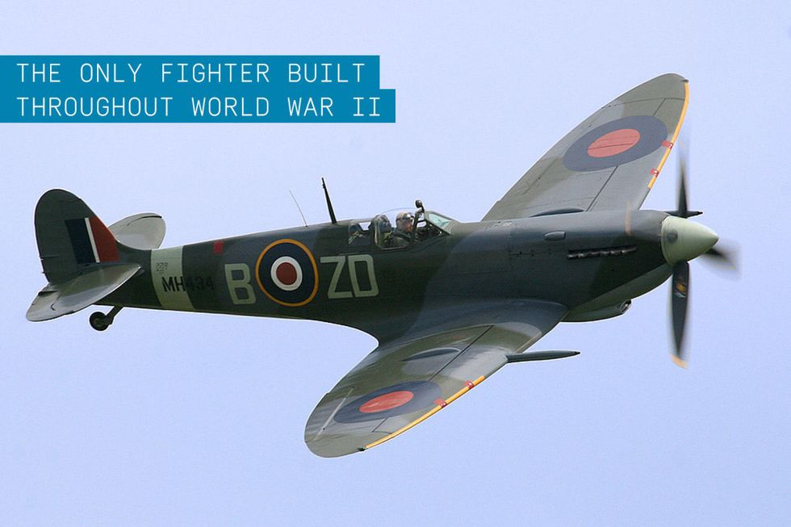
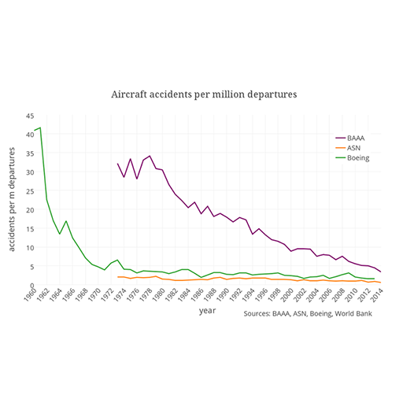

The history of aviation extends for more than two thousand years, from the earliest forms of
=======
The History of aviation extends for more than two thousand years, from the earliest forms of
>>>>>>> 02180c20f3191411707bd123844326eaa327a29f
aviation such as kites and
attempts at tower jumping to supersonic and hypersonic flight by powered, heavier-than-air jets.
Kite flying in China dates back to several hundred years BC and slowly spread around the world. It
is
thought to be the
earliest example of man-made flight. Leonardo da Vinci's 15th-century dream of flight found
expression in
several
rational designs, but which relied on poor science.
In the late 18th century the Montgolfier brothers invented the hot-air balloon and began manned
flights. At
almost the
same time, the discovery of hydrogen gas led to the invention of the hydrogen balloon.[1] Various
theories
in mechanics
by physicists during the same period of time, notably fluid dynamics and Newton's laws of motion,
led to the
foundation
of modern aerodynamics, most notably by Sir George Cayley. Balloons, both free-flying and tethered,
began to
be used for
military purposes from the end of the 18th century, with the French government establishing Balloon
Companies during the
French Revolution.[2]
Experiments with gliders provided the groundwork for learning the dynamics of heavier-than-air
craft, most
notably by
Cayley, Otto Lilienthal, and Octave Chanute. By the early 20th century, advances in engine
technology and
aerodynamics
made controlled, powered flight possible for the first time. In 1903, following their pioneering
research
and
experiments with wing design and aircraft control, the Wright brothers successfully incorporated all
of the
required
elements to create and fly the first aeroplane. The basic configuration with its characteristic tail
was
established by
1909, followed by rapid design and performance improvements aided by the development of more
powerful
engines.
The first great ships of the air were the rigid dirigible balloons pioneered by Ferdinand von
Zeppelin,
which soon
became synonymous with airships and dominated long-distance flight until the 1930s, when large
flying boats
became
popular. After World War II, the flying boats were in their turn replaced by land planes, and the
new and
immensely
powerful jet engine revolutionised both air travel and military aviation.
In the latter part of the 20th century, the advent of digital electronics produced great advances in
flight
instrumentation and "fly-by-wire" systems. The 21st century saw the large-scale use of pilotless
drones for
military,
civilian and leisure use. With digital controls, inherently unstable aircraft such as flying wings
became
possible.
This a Spitfire from WW2


Number of Accidents
We can see that still aeroplanes stay the same as they safest mode of transport
and
in
recent technological dvelopment, we see an declination of crashes/year.
Luckily, for Australians Qantas remains as one of the safest airlines in the
world
and
deliver top class service
The rise and fall of Concorde
Concorde used to be one of the fastest passenger jets and was expensive costing
a lifetime of a trip until the Air France disaster that killed all on board.
The dream of flying is as old as mankind itself. However, the concept of the airplane has only been
around
for two
centuries. Before that time, men and women tried to navigate the air by imitating the birds. They built
wings to
strap
onto their arm or machines with flapping wings called ornithopters. On the surface, it seemed like a
good
plan.
After
all, there are plenty of birds in the air to show that the concept does work.
The trouble is, it works better at bird-scale than it does at the much larger scale needed to lift both
a
man and a
machine off the ground. So folks began to look for other ways to fly. Beginning in 1783, a few aeronauts
made
daring,
uncontrolled flights in lighter-than-air balloons, filled with either hot air or hydrogen gas. But this
was
hardly a
practical way to fly. There was no way to get from here to there unless the wind was blowing in the
desired
direction.
It wasn’t until the turn of the nineteenth century that an English baronet from the gloomy moors of
Yorkshire
conceived
a flying machine with fixed wings, a propulsion system, and movable control surfaces. This was the
fundamental
concept
of the airplane. Sir George Cayley also built the first true airplane — a kite mounted on a stick with a
movable
tail.
It was crude, but it proved his idea worked, and from that first humble glider evolved the amazing
machines
that
have
taken us to the edge of space at speeds faster than sound.
This wing of the museum focuses on the early history of the airplane, from its conception in 1799 to the
years just
before World War I. Because we are a museum of pioneer aviation, we don’t spend a great deal of time on
those years
after Orville Wright closed the doors of the Wright Company in 1916. We concentrate on the development
of
the
airplane
before it was commonplace, when flying machines were odd contraptions of stick, cloth, and wire; engines
were
temperamental and untrustworthy; and pilots were never quite sure whether they’d be able to coax their
machine into
the
air or bring it down in one piece.
World War 1 and 2
World War II witnessed tremendous growth in the size of American military aviation, from about 2,500
airplanes to
nearly
300,000 by the war’s end. The Museum’s collection of 30 World War II-era American military aircraft ranges
from
propeller-driven trainers, fighters, flying boats, and bombers to the nation’s first generation of
jet-powered
fighters
to take to the air. They represent the pilots of the Army Air Forces, Navy, and Marines, as well as the
crews who
flew
them, the support personnel on the ground and at sea who maintained them, and the people who made these
weapons of
war
on the home front. The legacy of their contribution to World War II and the continued enthusiasm for these
aircraft
still resonates with Americans today.